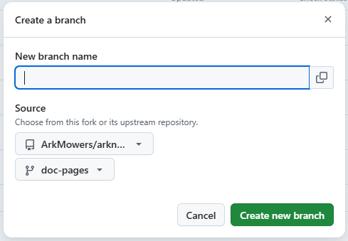

项目文档¶
本项目文档使用 Markdown 格式编写，由 MkDocs 构建，并使用 Material for MkDocs 主题。
源码在 doc-pages 分支，使用 Publishing from a branch 的方式自动部署到 GitHub Pages。
在本地预览与构建文档，需要安装 Python 3 环境。
准备工作¶
获取源码¶
首先前往 Mower 在 GitHub 上的主仓库进行 Fork：
https://github.com/ArkMowers/arknights-mower/fork
建议勾选 Copy the main branch only
在 Fork 页面建议勾选 Copy the main branch only 以保持你的仓库简洁。如果你后续需要维护其他分支，可以通过下文的 fetch 命令按需获取。
Fork 完成后，在自己的仓库新建一个分支，基于主仓库的 doc-pages 分支：
{kind=link}

接下来就可以克隆源码了
| bash | |
|---|---|
创建虚拟环境¶
源码克隆完成后，为隔离环境，需要在虚拟环境里安装依赖：
安装依赖¶
| bash | |
|---|---|
至此，准备工作已全部完成，可以愉快地编写文档了~
编辑、预览与构建¶
建议使用 Visual Studio Code 进行编辑。
文档文件结构¶
为了方便大家更快了解并上手编辑文档，这里给出文档文件结构：
目录说明¶
| 目录 | 用途 |
|---|---|
docs/manual/ |
当前用户手册，面向最终用户 |
docs/former-manual/manualV2/ |
第二版手册（入门指北），已归档 |
docs/former-manual/manualV1/ |
第一版手册（更早），已归档 |
docs/dev/ |
开发文档，面向贡献者 |
docs/assets/img/ |
文档中使用的截图、示意图等图片资源 |
docs/assets/logo/ |
站点 Favicon / Logo 图标文件 |
docs/assets/snippets/ |
mkdocs 可引用的 Markdown 片段文件 |
关键文件¶
| 文件 | 用途 |
|---|---|
mkdocs.yml |
MkDocs 主配置：定义站点名称、主题、导航栏结构、Markdown 扩展、插件等 |
requirements.txt |
Python 依赖项：pip install -r requirements.txt 安装 |
.github/workflows/ci.yml |
CI 流水线配置 |
导航结构由
mkdocs.yml中的nav配置控制。添加新页面时需同时更新nav。
-
实时预览： 用于编写文档时预览修改效果。
等待一会，mkdocs 会启动一个本地开发服务器，默认监听 localhost:8000bash -
本地构建：用于检查生成的静态文件是否正常。
bash
提交更改¶
完成编辑后，将更改推送到你自己的 Fork 仓库：
规范化提交
commit 的描述内容建议参考 约定式提交 规范。
同步 Fork¶
当主仓库（upstream）有了新更新，而你需要将其合并进你的开发分支时，请根据需求选择以下方式：
使用 Rebase 同步（推荐）¶
保持历史整洁
变基（Rebase）会将你的修改“接”在主仓库最新的提交之后，避免产生无用的 Merge branch 提交记录。
处理冲突：
- 若提示
CONFLICT，请在 VS Code 中处理冲突文件。 - 处理完后执行
git add .（不要 commit）。 - 执行
git rebase --continue直到变基完成。
常规合并（Merge）¶
如果你更习惯传统的合并方式：
强制同步（放弃本地修改）¶
危险操作
该操作将会彻底覆盖你本地的所有更改，使其与主仓库完全一致。
创建 Pull Request¶
在你的 GitHub Fork 仓库页面点击 "Compare & pull request"。
注意： 请确保 base repository 指向主仓库，且 base 分支选择为 doc-pages。